Работал над разными типами проектов: от казуальных игр до промышленных приложений. Основной интерес — архитектура, производительность и масштабируемость систем. Нравится разбираться в сложных задачах и находить для них простые решения.
Опыт: 4+ года
Хобби: игры, GameDev, CGI, программирование
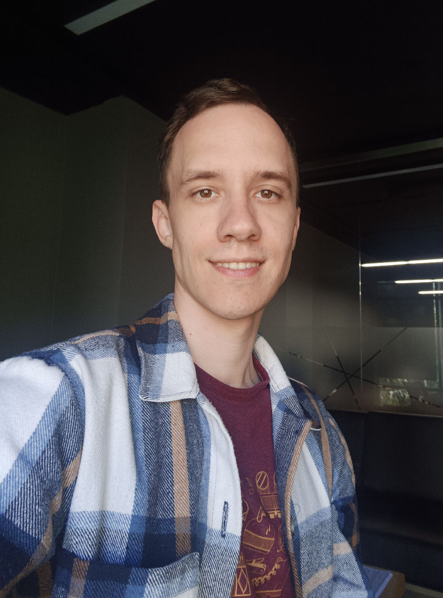
Мобильная игра в жанре Survivors
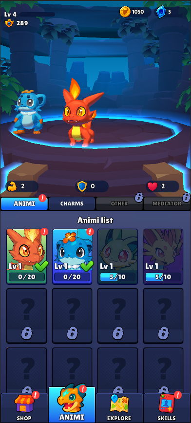
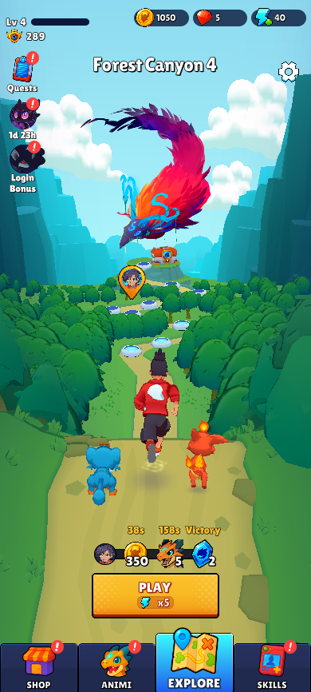
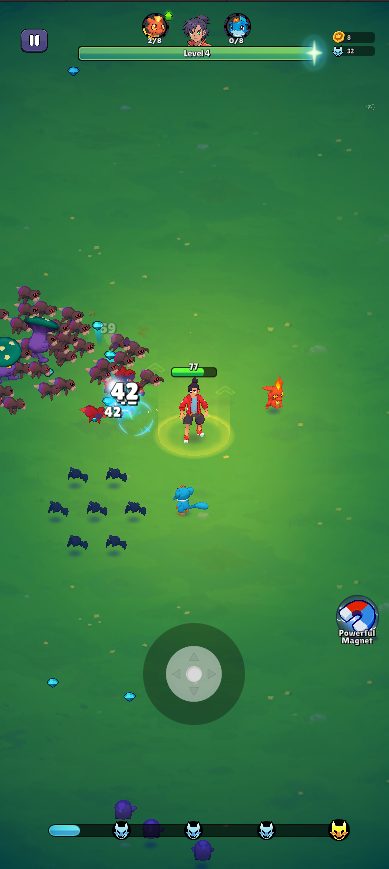
Ресурсы:
Нодовый редактор, работающий на планшете, для составления чертежа трубопровода и редактирования его параметров
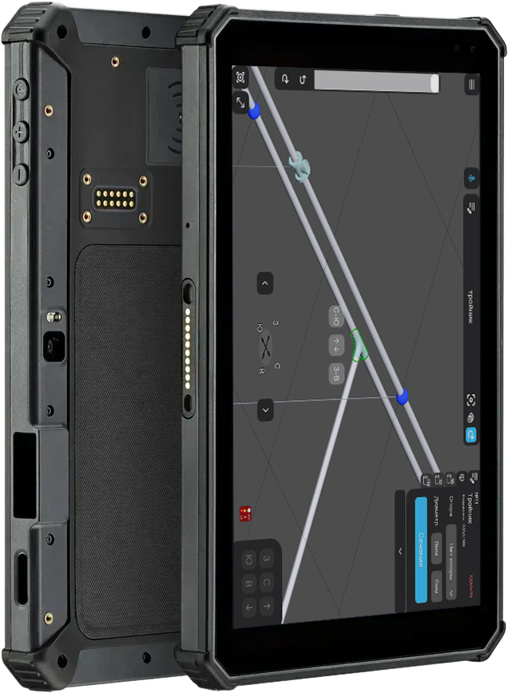
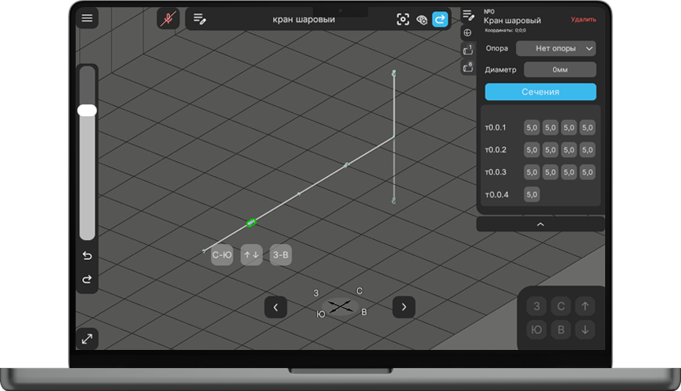
Ресурсы:
Мой технический пет-проект, визуализирующий аудиосигнал в реальном времени через 3D-объекты. Динамичная сцена, изменяющаяся под музыку с помощью спектрального анализа и ShaderGraph.
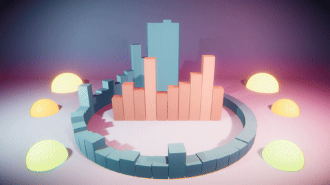
Ресурсы:
Казуальная аркада, интерпретация игры Tomb of the Mask.
Проект закрыт
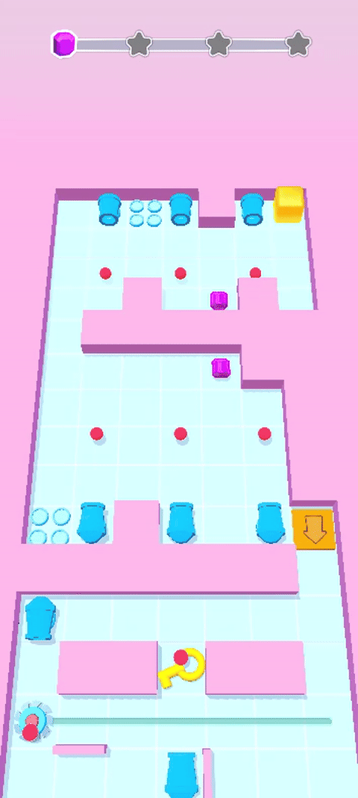
Мобильная игра-выживание: крафт, защита от врагов в океане, строительство плота. На Google Play >100 млн загрузок.
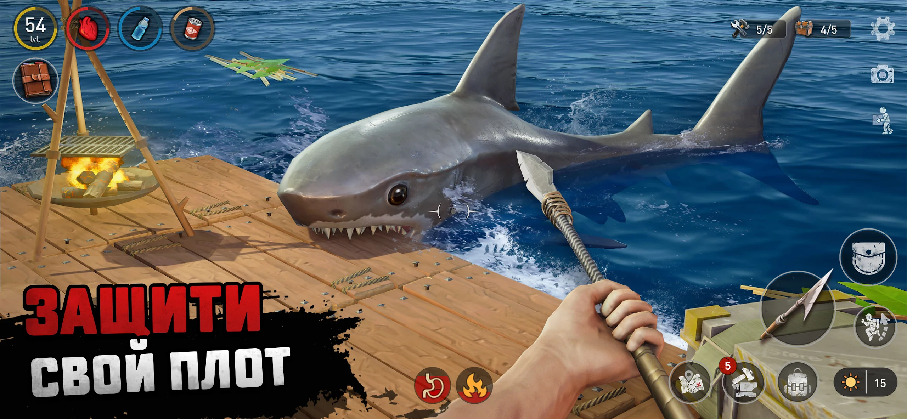
Ресурсы:
Игра, созданная на Siberian Game Jam 2022 (команда MFG).
Юмористичный квест, где игроку предстоит выбраться из комнаты с помощью случайных предметов. Игра получила 4‑е место в категории Best Innovation.
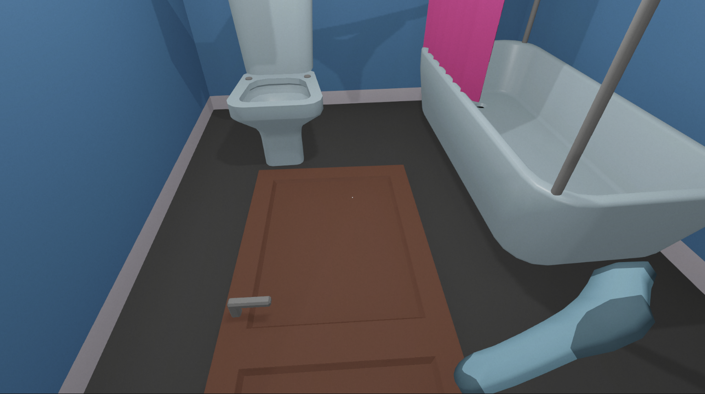
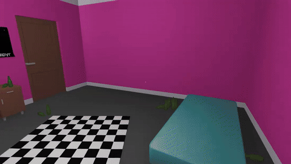
Ресурсы: